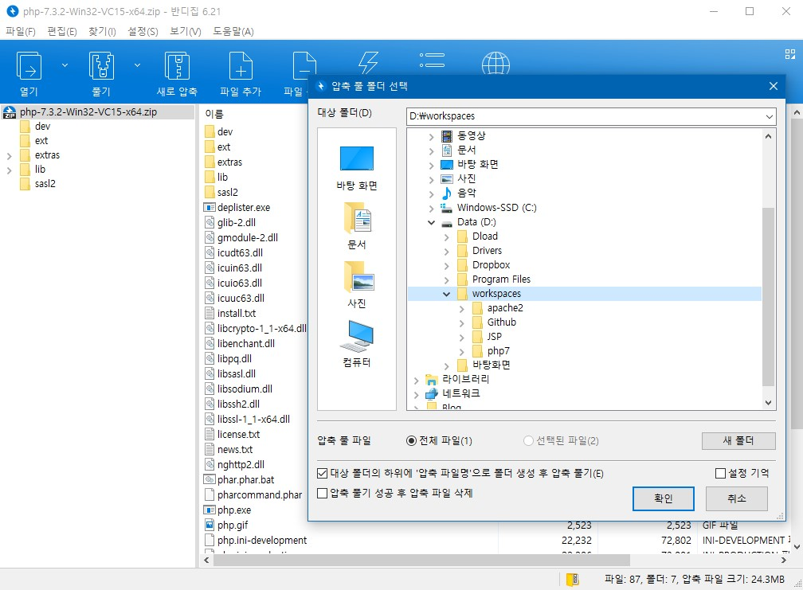
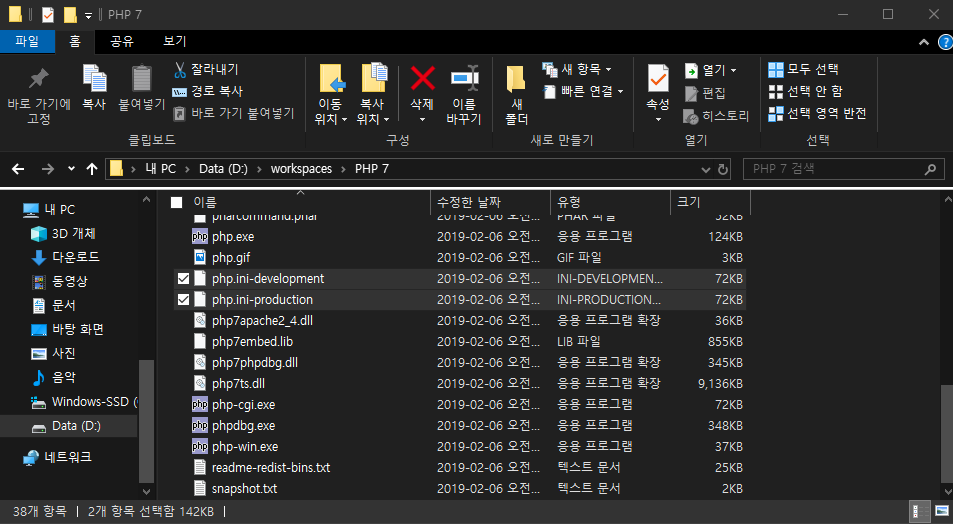
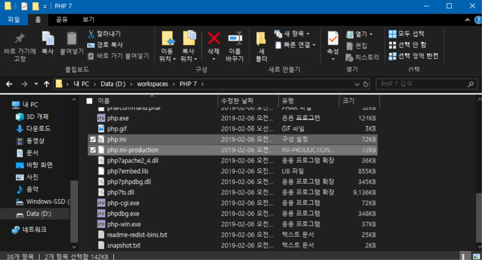

지난 포스트에 이어 이제 2번째 챕터입니다.
이제 우리의 컴퓨터가 웹 서버의 역할을 할 수 있도록 Apache를 설치했으니
PHP를 설치해보도록 하겠습니다!(19년 2월 기준 7.3.2 released)
우선 다운로드 받았던 PHP 압축파일을 열어서 각자의 작업영역에 압축을 풀어줍니다.
폴더명은 항상 알기 쉽게 바꿔주시면 좋습니다. 저는 알기쉽게 PHP7로 폴더명을 바꿔주었습니다.

그리고 항상 어떤 프로그램을 설치하면서 개발환경을 맞춰줄 땐
000.conf 나 000.ini 과 같은 파일을 본인에게 맞게 설정하는 것이 첫걸음 입니다.
폴더안에 들어가서 스크롤을 내려보면

php.ini-development(개발환경에서 필요한 추천 설정들이 추가된 것)
php.ini-production(실제 배포용? 인듯)
두개의 파일이 있습니다.
php 5.3.0 부터 php.ini파일이 재구성되어서 위 두 파일로 구분되게 되었습니다.-> documentation
설정파일을 사용할 땐 파일명 뒤의 "-blablabla..."를 지우시고 ini 확장자만 남도록 하여 사용하시면 됩니다.
저는 development 파일을 사용했는데 검색을 해보니까 애초에 product로 사용하는 걸 추천하는 글이 있더라고요? -> link
두 설정파일이 크게 다르다고 명시되어 있지 않으니까 원하시는 파일을 골라 이름을 바꿔주시면 됩니다.
'-(하이픈)'뒤 글자를 지워주세요!(원본은 놔두고 복사해서 사용해도 됩니다.)

그 다음에 단축키 win + r 을 눌러 실행파일에 "notepad" 를 입력해주세요!
그리고 php.ini를 메모장 작업영역에 드래그&드롭하여 파일을 열어줍니다.(파일을 여는 방법은 다양하니 자유롭게 하세요)
이제 내용을 하나하나 수정해나가겠습니다.
-
먼저 extension_dir 값을 바꿔줍니다.(확장모듈 경로 관리)
ctrl + f : "extension_dir" 로 검색하여 아래와 같은 위치로 이동합니다.

위치를 본인의 php폴더 내 "ext" 폴더로 지정해줍니다.(ext 폴더 까지!)
ex)"D:\workspaces\PHP 7\ext"

-
추후 mysql 모듈과의 연결을 위해 확장을 허용해줍니다.(아래이미지는 확장에 대한 간단한 설명입니다)

ctrl + f 로 "extension=mysqli" 로 이동해줍니다.
확장을 하는 곳으로 이동하고 스크롤을 위로 조금만 하면 위와같이 확장을 불러오는 간단한
예시가
있습니다.
한번 눈으로 쓱 읽고 가시면 좋습니다.
위의 키워드로 검색하면 아래와 같은 화면이 화면상에 출력됩니다.

mysqli에 해당하는 extension 앞의 ";"(세미콜론) 을 지워줍니다.
이와 더불어 5번째 줄 아래에 있는 pdo_mysql 의 extension 또한 ";" 를
지워줍니다.
작업이 마무리 되었으면 저장을 합니다.(ctrl + s)
이렇게 벌써 php도 설정이 끝났습니다.(뭔가 빠진것 같은 건 기분탓입니다)
Apache 처럼 확인을 해봐야겠죠?
apache 폴더로 들어가줍니다.

htdocs 로 들어가 줍니다.(root directory -> 클릭)
그러면 index.html 파일이 존재하고 있을겁니다.

파일을 눌러 실행해보면 우리가 저번 챕터에서 봤던

이 화면이 출력됩니다.
고로 앞으로 우리는 이 위치에서 파일을 계속 만들고 구성해줘야 한다는 것이죠.
물론 위 스크린샷은 로컬에서 실행했기 때문에 주소창에서는 로컬파일의 경로가 나옵니다.
우린 이미 Apache가 설치되었으니 주소창에 localhost 또는 127.0.0.1 로 실행해야됩니다.
(당연하게도 이 설정은 ★apache/conf/httpd.conf★ 에서 바꿀 수 있습니다.)
텍스트 에디터(IDE:통합개발환경)를 활용해 php파일을 만들어 보겠습니다.
atom, eclipse, vscode 등이 있죠?
전 그냥 전통적인 방식으로 메모장을 활용하겠습니다ㅋㅋ

위와 같이 입력해주세요.
그리고 '파일 > 다른이름으로 저장 > "phpinfo.php"' 로 저장해줍니다.
인코딩 방식은 습관처럼 UTF-8로 해주세요.
저장위치는 위에서 봤던 것처럼 우리의 root directory인 "아파치폴더"/htdocs 위치에 저장해 줍니다.

그리고 한번 127.0.0.1/phpinfo.php 로 접속해보시면

위와 같은 페이지가 안나올겁니다. 나온다면 나온것대로 신기한 일이구요.
위 페이지가 안나왔다! 그럼 자연스럽게 왜 안되는 지 대충 연관이 되실겁니다.
위 과정에서 빠진 부분이 바로 apache와 php의 연동 부분입니다!
저희는 위 과정 중 mysql과 추후 연동하기 위해서 확장을 "미리" 해놨습니다.
개발자가 서로 연결해주지 않았는데 어떻게 컴퓨터가 알아서 연결을 할까요?
우리는 일일히 직접 연결해주는 과정을 하고 있기에 연동은 필수입니다!
apache/conf/httpd.conf에서 제일 아래로 스크롤을 내려줍니다.
그리고
PHPIniDir "각자의 작업영역/php7"
LoadModule php7_module "각자의 작업영역/php7/php7apache2_4.dll"
AddType application/x-httpd-php .html .php
AddHandler application/x-httpd-php .php
위 문구를 그대로 복사하여 넣어줍니다.
php의 작업영역은 각자 다르겠죠?
저로 예를 든다면 PHPInDir 을 "D:/workspaces/php7"로 설정해줘야 합니다.
php7 이라는 폴더는 제가 당연히 이름을 바꾼 폴더란 거 아시겠죠?
압축파일을 풀었을 때의 해당 폴더 이름을 제가 "php7"으로 바꿨다는 점 알아두시길 바랍니다.
위의 AddType, AddHandler 부분은 여기 에서
확인하였습니다.
아마 어떤 타입의 파일 확장자인지에 따라 파일을 읽고 안읽고의 차이인 것 같습니다.
이제 httpd.conf 파일을 저장하시고
다시한번 127.0.0.1/phpinfo.php 주소로 이동해 주시면 됩니다.
이제 아래의 배너가 나올 겁니다. 버전은 각자 다를 것이구요ㅎ

만약 여기까지 왔는데 페이지가 안나온다.. 127.0.0.1 도 안들어가진다... 하시는 분들은
저번 챕터를 읽고 시간이 좀 흐르고 이 글을 읽는 것이겠죠?
다시 확인을 해봅시다!
-
cmd 를 관리자모드로 실행
-
httpd -k start 입력

-
다시 콘솔입력 커서 깜빡깜빡

위 과정을 진행하고 다시 접속을 해보죠.
그래도 안되고 오류가 뜬다??
오류코드를 검색하시거나 다방면으로 찾아보시길 바랍니다^^
그리고 알게 되신다면 제 github 저장소에 issues 로 남겨주시면 확인 후 추가하겠습니다!!
다음챕터에선 마지막으로 MySQL 설치 및 연동과정을 진행하겠습니다!
수고하셨습니다^^
key word
httpd.conf / php.ini
apache서버 설정 / php 설정